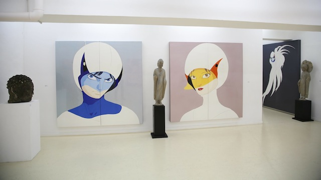

Traditional Art
Although he is most known for his work on video game designs, Yoshitaka Amano also works on more traditional pieces as well. In more recent years, he's taken a break from concept art to focus solely on his traditional art.

Cinderella, 2018
Girl With A Snake, 2012

Deva Loka Genesis, 2017